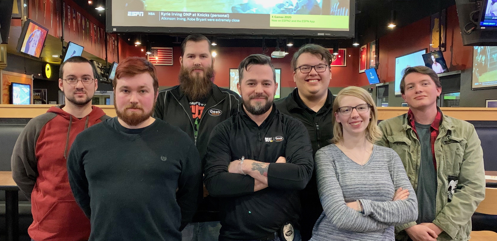
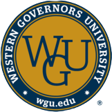

My plans for the future!
The past few years have no doubt been some of the hardest years that we all have had to endure, and I of course am no exception. It's been a struggle readjusting to this new world that we are living in during this pandemic, but despite this, I feel like I have been able to make the most of it! During 2020 I decided that I would start going back to school to pursue a higher education. I decided to leave my place of comfort and start looking for other jobs. I've been able to start new relationships with new people. I've truly been blessed over these past few years, and I don't intend on stopping any time soon!
This year I was able to take the next step in my professional life by leaving Geek Squad and starting an internship at TVA! As much as I enjoyed my time there, it was an opportunity that I couldn't pass up. I am so grateful for the things that I learned from all of them! I am working as hard as I can to turn this internship into a full-time position!
Me and my old coworkers at Geek Squad!
After this semester, I will have finally finished my associate degree, and will be attending Wester Governors University online to pursue my bachelor degree in software development, which will in turn help me convert my internship into a permanent position!
